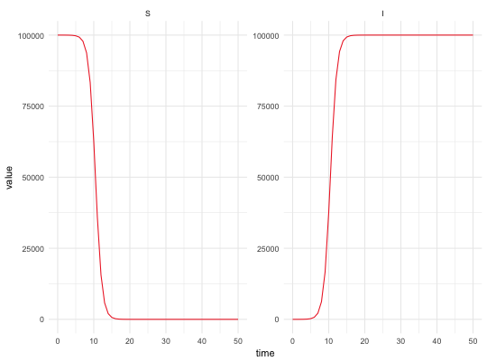

This function uses faceting to plot all trajectories in a data frame. It allows the conveniant manipulation of several simulations or data. It also allows complex model output to be aggregated. Additionally if data is present, then an additional plot can be displayed with data and potentially observations generated. This function is heaviliy based on plotTraj from the fitR package written by Sebaustian Funk.
plot_model(traj = NULL, state.names = NULL, data = NULL, time.column = "time", lines.data = FALSE, summary = TRUE, replicate.column = "replicate", non.extinct = NULL, alpha = 1, plot = TRUE, colour = "firebrick2", set_theme = theme_minimal, init.date = NULL, same = FALSE, aggregate_to = NULL, compartments = NULL, strat = NULL, hold_out_var = NULL, new_var = "incidence", id_col = NULL, groups = NULL, total_pop = TRUE, summary_var = FALSE, verbose = FALSE)
| traj | Data frame, generic model output although tailored to work with pomp model objects. |
|---|---|
| state.names | A character vector. Names of the state variables to plot.
If |
| data | A data frame. Observation times and observed data. The time column must match that used in the model object, whilt the observation name should also match one of those found in the model object. |
| time.column | A character vector. The column in the data that indicates time |
| lines.data | Logical. If |
| summary | Logical. If |
| replicate.column | A character vector. The column in the data that indicates the replicate
(if muliple replicates are to be plotted, i.e. if |
| non.extinct | A character vector. Names of the infected states which must be non-zero so the epidemic is still ongoing. When the names of these states are provided, the extinction probability is plotted by computing the proportion of faded-out epidemics over time. An epidemic has faded-out when all the infected states (whose names are provided) are equal to 0. This is only relevant for stochastic models. |
| alpha | Transparency of the trajectories (between 0 and 1). |
| plot | if |
| colour | A character vector. If a character, will use that colour to plot trajectories. If "all", use all available colours.
If |
| set_theme | Set the ggplot2 theme, defaults to theme_minimal. |
| init.date | Character. Date of the first point of the time series (default to |
| same | Logical. If |
| aggregate_to | A character vector or list specifying the aggregation operations to perform on the model output. Operations are carried out in the order specified. Implemented options are; disease, demographic, and incidence. |
| compartments | A character vector or list specifying the unique compartments to aggregate. May either be specified once for all aggregation functions or for each function seperately. |
| strat | The number of stratified groups in the model. |
| hold_out_var | A character vector or list specifying the unique compartments that will not be aggregated. May either be specified once for all aggregation functions or for each function seperately. If compartments is set then this arguement does not need to be used. |
| new_var | A character vector specifying the new variable to add when aggregating incidence. |
| id_col | A character string containing the name of the new id column. |
| groups | A character vector with length equal to the level of stratification. Used to name the stratified levels. |
| total_pop | A logical (defaults to |
| summary_var | A logical (defaults to |
| verbose | Logical (defaults to |
Optionally prints or stores a plot of trajectories
summarise_model aggregate_model
## Intialise N = 100000 I_0 = 1 S_0 = N - I_0 R_0 = 1.1 beta = R_0 ##Time for model to run over tbegin = 0 tend = 50 times <- seq(tbegin, tend, 1) ##Vectorise input parameters <- c(beta = beta) inits <- c(S = S_0, I = I_0) SI_sim <- simulate_model(model = SI_ode, sim_fn = solve_ode, inits, parameters, times) plot_model(SI_sim)